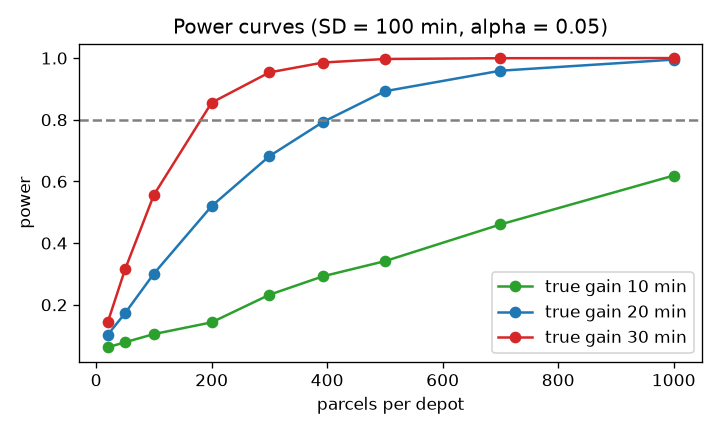

Your delivery company introduces a "faster sorting process" and the average delivery time drops from 250 minutes to 225 minutes in a trial. Is the fix real, or did you just get a lucky run? A hypothesis test answers that question with a probability instead of a feeling. The Math PDF (Pillar 3.2) showed you the idea of a null hypothesis and a p-value. In this chapter you learn how the machinery works in practice: how to pick between the z-test, t-test, paired test, chi-square, ANOVA and the non-parametric tests; how to check assumptions; and how to calculate, before the test, how much data you need. Every test is run on real numbers, and every p-value is checked by simulation, so you will see what a p-value really is.
We use one story throughout: you are comparing delivery depots of an online shop on delivery time, damage rates and the mix of customers.
| Word | Plain meaning | Example |
|---|---|---|
| Null hypothesis H₀ | The "nothing happening" claim | Mean delivery time is unchanged |
| Alternative H₁ | What you suspect | Mean delivery time changed (two-sided) or dropped (one-sided) |
| Test statistic | A number that measures how far the data are from H₀ | t = (x̄ − μ₀) / SE |
| p-value | P(data this extreme or more \ | H₀ true) |
| Significance level α | The p-value cut-off you set before the test | 0.05 |
| Type I error | Rejecting a true H₀ (false alarm), probability α | Declaring a fix real when it is not |
| Type II error | Failing to reject a false H₀ (miss), probability β | Missing a real improvement |
| Power | 1 − β, the chance of detecting a real effect | 0.80 |
| One-tailed vs two-tailed | Looking for change in one direction or either | "dropped" vs "changed" |
| Item | Example value | Where it appears in the job |
|---|---|---|
| α = 0.05 | 1 false alarm in 20 null tests | Regression detection in CI pipelines |
| Power = 0.8 | 80 percent chance to catch a real 20-minute gain | Planning the trial size |
| One-tailed | "Did delivery time get worse?" | Quality gates (only worse matters) |
Problem 4.1.1 (what a p-value is) The null is "mean delivery time = 500 minutes". A sample of n = 25 has mean 480 and SD 100. Compute the t statistic and the two-sided p-value by hand, then show by simulation that the p-value is the fraction of null-world samples as extreme as ours.
| Formula | t = (x̄ − μ₀) / (s / √n); two-sided p = 2 × P(T₂₄ > |t|) |
|---|---|
| Plug in | t = (480 − 500) / (100 / 5) |
| Compute | t = −20 / 20 = −1.00. With 24 degrees of freedom, P(T > 1) = 0.1635, so p = 2 × 0.1635 = 0.327. |
| Answer | p = 0.327. If the true mean were really 500 minutes, about 1 sample in 3 would be at least this far from 500 just by chance. So we have no evidence that the mean differs from 500. |
| Check | The simulation draws 200,000 null-world samples (true mean 500, SD 100, n = 25) and counts how many have |t| ≥ 1. The share should be near 0.327. |
| Why it matters | "Not significant" does not prove the promise of 500 minutes is met. It says the data cannot tell 480 from 500. |
Predict: will the simulated share be exactly 0.327?
import numpy as np
from scipy import stats
n, xbar, s, mu0 = 25, 480, 100, 500
t = (xbar - mu0) / (s / np.sqrt(n))
p = 2 * stats.t.sf(abs(t), n - 1)
print("t = %.3f p = %.4f" % (t, p))
rng = np.random.default_rng(30)
sim = rng.normal(500, 100, (200_000, n))
tsim = (sim.mean(1) - mu0) / (sim.std(1, ddof=1) / np.sqrt(n))
print("simulated share with |t|>=1:", round((abs(tsim) >= 1).mean(), 4))t = -1.000 p = 0.3273
simulated share with |t|>=1: 0.3276Problem 4.1.2 (p-values under a true null, and the Type I error rate) Run 20,000 experiments in which both depots have the same delivery-time distribution (Normal, mean 250, SD 60, n = 40 each). Run a two-sample t-test in each. What share of p-values are below 0.05? What does the histogram of p-values look like?
| Formula | Under H₀ the p-value is Uniform(0, 1), so P(p < α) = α. |
|---|---|
| Plug in | α = 0.05, 20,000 experiments |
| Compute | See output: the share below 0.05, below 0.10, and below 0.50. |
| Answer | About 5 percent of true-null experiments give p < 0.05, about 10 percent give p < 0.10, and about 50 percent give p < 0.50. The p-values are spread evenly. |
| Check | Uniform means each bin of width 0.1 holds about 10 percent of the values (2,000 of 20,000). |
| Why it matters | If you test 100 meaningless metrics, expect about 5 "significant" ones. This is the origin of false discoveries. |
a = rng.normal(250, 60, (20_000, 40)); b = rng.normal(250, 60, (20_000, 40))
pv = stats.ttest_ind(a, b, axis=1).pvalue
print("share p<0.05: %.4f p<0.10: %.4f p<0.50: %.4f" % ((pv < .05).mean(), (pv < .10).mean(), (pv < .5).mean()))
print("counts per 0.1-wide bin:", np.histogram(pv, bins=10, range=(0, 1))[0])share p<0.05: 0.0496 p<0.10: 0.0998 p<0.50: 0.5064
counts per 0.1-wide bin: [1997 2043 2016 2031 2041 1938 1966 2007 2055 1906]p-values when H0 is TRUE (flat): p-values when H1 is TRUE (piled at 0):
count count
|# # # # # # # # # # |#
|# # # # # # # # # # |# #
|# # # # # # # # # # |# # # . . . . . . .
+--------------------------- p +--------------------------- p
0 1 0 1How to read it: each bar is how many experiments produced a p-value in that bin. A flat histogram means the test has no real effect to find. A pile near zero means a real effect was found often (high power).
Routine quality checks are hypothesis tests: "is this month's delivery slower than last month's?" A threshold p = 0.05 means 1 false alarm in 20 perfectly normal months, which is a real cost when managers must investigate each alarm. This is why teams use smaller α, repeated checks, or effect-size thresholds.
Check yourself
| Word | Plain meaning | Example |
|---|---|---|
| z-test | Test using the normal distribution; needs known SD or very large n | Proportions with large n |
| One-sample t | Compare one mean to a fixed value | Mean delivery time vs a 500-minute promise |
| Two-sample (independent) t | Compare means of two separate groups | Depot A vs Depot B |
| Welch's t-test | Two-sample t that does not assume equal variances (the safe default) | |
| Paired t | Test on within-pair differences | Same routes before and after a change |
| Levene / F test | Tests whether two groups have equal variances |
t = (x̄ − μ₀) / (s/√n), df = n − 1.t = (x̄₁ − x̄₂) / √(s₁²/n₁ + s₂²/n₂); df from the Welch-Satterthwaite formula (computed by software).z = (p̂₁ − p̂₂) / √(p̂(1 − p̂)(1/n₁ + 1/n₂)) with pooled p̂.| Item | Example value | Where it appears in the job |
|---|---|---|
| Welch t | t = 2.07, p = 0.04 | Depot A vs Depot B average delivery time |
| Paired t | mean difference −18 min, p < 0.001 | Same 12 routes before/after a change |
| Two-proportion z | 5.0% vs 6.2% conversion | A/B test |
Problem 4.2.1 (Welch two-sample t) Depot A: n = 40 parcel batches, mean 250 min, SD 60. Depot B: n = 45, mean 225 min, SD 50. Test whether the means differ.
| Formula | t = (x̄₁ − x̄₂) / √(s₁²/n₁ + s₂²/n₂) |
|---|---|
| Plug in | SE = √(60²/40 + 50²/45) = √(90 + 55.56) |
| Compute | SE = √145.56 = 12.07. t = 25 / 12.07 = 2.072. Welch df is about 77. The p-value is about 0.04. |
| Answer | t = 2.07, p ≈ 0.041. At α = 0.05 we reject H₀: Depot B's mean is lower, by 25 minutes with a 95 percent interval of roughly 1 to 49 minutes. |
| Check | |t| just above 2 with ~77 df gives p ≈ 0.04, consistent with the rule of thumb "|t| > 2 means p < 0.05". |
| Why it matters | The interval (1 to 49 minutes) tells the full story: B is faster, but the data are consistent with an almost useless 1-minute gain or a large 49-minute gain. |
res = stats.ttest_ind_from_stats(250, 60, 40, 225, 50, 45, equal_var=False)
se = np.sqrt(60**2 / 40 + 50**2 / 45)
dfw = (60**2/40 + 50**2/45)**2 / ((60**2/40)**2/39 + (50**2/45)**2/44)
ci = 25 + np.array([-1, 1]) * stats.t.ppf(0.975, dfw) * se
print("t = %.3f p = %.4f Welch df = %.1f SE = %.2f" % (res.statistic, res.pvalue, dfw, se))
print("95%% CI for the difference: (%.1f, %.1f)" % tuple(ci))t = 2.072 p = 0.0416 Welch df = 76.3 SE = 12.06
95% CI for the difference: (1.0, 49.0)Problem 4.2.2 (paired versus unpaired) 12 delivery routes are timed before and after a new dispatch rule. The routes differ a lot from each other (base times 100 to 900 minutes) but the rule gives each a similar saving (about 20 minutes, noise SD 10). Compare the paired test with the wrong unpaired test on the same data.
| Formula | Paired: t = d̄ / (s_d / √n), df = n − 1 |
|---|---|
| Plug in | Differences dᵢ = after − before for each route. |
| Compute | The code generates the data and runs both tests. |
| Answer | The paired test finds a clearly significant drop: mean difference −19.1 min, t = −5.86, p = 0.0001. The unpaired test, which treats the routes as unrelated, does not see it at all (p = 0.87), because route-to-route variation (SD ~250 min) swamps the 20-minute gain. |
| Check | The SE of the paired difference is s_d/√12 = 11.3/3.46 = 3.3 min, while the unpaired SE is about 100 min (route SD of about 250 min): roughly 30 times larger. |
| Why it matters | Whenever the same units are measured twice, use a paired design and a paired test. It is one of the cheapest ways to gain power. |
rng = np.random.default_rng(31)
base = rng.uniform(100, 900, 12)
before = base + rng.normal(0, 10, 12)
after = base - 20 + rng.normal(0, 10, 12)
d = after - before
print("mean diff %.1f sd of diff %.1f" % (d.mean(), d.std(ddof=1)))
print("paired : t=%.2f p=%.2e" % tuple(stats.ttest_rel(after, before)))
print("unpaired : t=%.2f p=%.3f" % tuple(stats.ttest_ind(after, before, equal_var=False)))mean diff -19.1 sd of diff 11.3
paired : t=-5.86 p=1.09e-04
unpaired : t=-0.16 p=0.873Problem 4.2.3 (two proportions and the F/Levene test) Variant A: 500 of 10,000 visitors convert (5.0%). Variant B: 600 of 10,000 convert (6.0%). Test the difference with the z-test. Then compare delivery-time variances of two groups with the F-test and Levene's test.
| Formula | z = (p̂₁ − p̂₂) / √(p̂(1 − p̂)(1/n₁ + 1/n₂)), pooled p̂ = (500 + 600) / 20,000 = 0.055 |
|---|---|
| Plug in | SE = √(0.055 × 0.945 × (2/10,000)) = √(0.0000104) = 0.003224 |
| Compute | z = (0.06 − 0.05) / 0.003224 = 3.10; two-sided p = 0.0019. |
| Answer | z = 3.10, p = 0.0019. B's conversion is higher by 1.0 percentage point, and this is unlikely to be luck. For the delivery-time groups (log-normal with sigma 0.5 and 0.7) both the F-test (p = 1.7e-7) and Levene's test (p = 0.00034) say the variances differ; with skewed data trust Levene, because the F-test is overly sensitive to non-normality. |
| Check | The chi-square test on the same 2×2 table gives χ² = z² = 9.6 and the same p. |
| Why it matters | At 5 percent base rate, a 20 percent relative lift needs about 10,000 visitors per arm to be detected. That is typical A/B planning. |
x1, n1, x2, n2 = 500, 10_000, 600, 10_000
pp = (x1 + x2) / (n1 + n2)
z = (x2/n2 - x1/n1) / np.sqrt(pp * (1 - pp) * (1/n1 + 1/n2))
print("z = %.3f p = %.4f z^2 = %.2f" % (z, 2 * stats.norm.sf(z), z**2))
chi = stats.chi2_contingency([[x1, n1 - x1], [x2, n2 - x2]], correction=False)
print("chi-square = %.2f p = %.4f" % (chi[0], chi[1]))
rng = np.random.default_rng(32)
g1 = rng.lognormal(5.3, 0.5, 200); g2 = rng.lognormal(5.3, 0.7, 200)
F = g1.var(ddof=1) / g2.var(ddof=1); pF = 2 * min(stats.f.cdf(F, 199, 199), stats.f.sf(F, 199, 199))
print("F test: F=%.3f p=%.2e Levene: stat=%.2f p=%.2e" % ((F, pF) + tuple(stats.levene(g1, g2))))z = 3.102 p = 0.0019 z^2 = 9.62
chi-square = 9.62 p = 0.0019
F test: F=0.472 p=1.66e-07 Levene: stat=13.05 p=3.42e-04Paired design (lines join the same route): Unpaired view (just two clouds):
min | o------o <- all drop by ~20 min | o o o o o
| o------o | o o o o
| o------o | o o o o
+------------------ +--- before ---- after ---The paired picture shows every line sloping down by the same small amount; the unpaired picture hides that signal inside the spread between routes.
Choose Welch by default for two independent groups (never assume equal variances), paired for before/after on the same units, and two-proportion z-tests for conversion and error rates. In delivery or retail comparisons a paired design means measuring both versions of a process on the same routes, shops or customers.
Check yourself
| Word | Plain meaning | Example |
|---|---|---|
| Goodness-of-fit | Do observed counts match a stated distribution? | Equal use of 4 counters |
| Contingency table | Counts split by two categories | Browser × converted |
| Expected count | Count we would see if H₀ were true | 250 per counter |
| Independence | Knowing one category tells nothing about the other | Browser does not affect conversion |
χ² = Σ (O − E)² / E.| Item | Example value | Where it appears in the job |
|---|---|---|
| Goodness-of-fit | 280, 240, 260, 220 vs 250 each | Load-balancer fairness, random-number check |
| Independence | Browser × conversion | Segment analysis |
| Cramér's V | 0.08 = weak | Effect size for categorical association |
Problem 4.3.1 (goodness-of-fit by hand) 1,000 shoppers used 4 checkout counters: 280, 240, 260, 220. If shoppers choose freely it should be equal (250 each). Test the fairness.
| Formula | χ² = Σ (O − E)² / E, df = 4 − 1 = 3 |
|---|---|
| Plug in | (280−250)²/250 + (240−250)²/250 + (260−250)²/250 + (220−250)²/250 |
| Compute | 900/250 + 100/250 + 100/250 + 900/250 = 3.6 + 0.4 + 0.4 + 3.6 = 8.0. For χ²(3), P(χ² ≥ 8.0) = 0.046. |
| Answer | χ² = 8.0, p = 0.046. This is just below 0.05, so there is weak evidence that the traffic split is not equal. |
| Check | The 5 percent critical value for 3 df is 7.815, and 8.0 exceeds it. The code agrees. |
| Why it matters | A borderline result like this should trigger a larger sample, not a declaration of victory or defeat. With a count of 10,000 shoppers and the same proportions, χ² would be 80 and p tiny. |
obs = np.array([280, 240, 260, 220])
r = stats.chisquare(obs, f_exp=[250] * 4)
print("chi2 = %.2f p = %.4f critical(5%%, 3 df) = %.3f" % (r.statistic, r.pvalue, stats.chi2.ppf(.95, 3)))
r10 = stats.chisquare(obs * 10, f_exp=[2500] * 4)
print("same shares, 10x data: chi2 = %.1f p = %.2e" % (r10.statistic, r10.pvalue))chi2 = 8.00 p = 0.0460 critical(5%, 3 df) = 7.815
same shares, 10x data: chi2 = 80.0 p = 3.07e-17Problem 4.3.2 (independence in a contingency table) Conversion by browser: Chrome 300 converted and 2,700 did not; Safari 120 and 1,380; Firefox 60 and 940. Are browser and conversion independent? Report Cramér's V.
| Formula | E = (row total × column total) / grand total; χ² = Σ(O − E)²/E; df = (3−1)(2−1) = 2 |
|---|---|
| Plug in | Row totals 3,000; 1,500; 1,000. Column totals 480 converted; 5,020 not. Grand total 5,500. |
| Compute | E for Chrome-converted = 3,000 × 480 / 5,500 = 261.8. The code prints all cells, χ² and p. |
| Answer | χ² = 16.43 with 2 df and p = 0.0003, so conversion differs between browsers (Chrome 10.0%, Safari 8.0%, Firefox 6.0%). But Cramér's V is only 0.055: the link is statistically clear but weak in size. |
| Check | All expected counts are above 5, so the test is valid. Observed and expected totals agree: both sum to 5,500. |
| Why it matters | With large n, tiny effects become "significant". Always add an effect size. |
tab = np.array([[300, 2700], [120, 1380], [60, 940]])
chi2, p, dof, exp = stats.chi2_contingency(tab)
V = np.sqrt(chi2 / (tab.sum() * min(tab.shape[0] - 1, tab.shape[1] - 1)))
print("expected counts:\n", np.round(exp, 1))
print("chi2 = %.2f dof = %d p = %.4f Cramer's V = %.3f" % (chi2, dof, p, V))
print("conversion rates:", np.round(tab[:, 0] / tab.sum(1), 3))
print("Fisher exact p on tiny table [[3,1],[1,3]]: %.4f" % stats.fisher_exact([[3, 1], [1, 3]])[1])expected counts:
[[ 261.8 2738.2]
[ 130.9 1369.1]
[ 87.3 912.7]]
chi2 = 16.43 dof = 2 p = 0.0003 Cramer's V = 0.055
conversion rates: [0.1 0.08 0.06]
Fisher exact p on tiny table [[3,1],[1,3]]: 0.4857Observed Expected if independent
Chrome 300|2700 261.8|2738.2
Safari 120|1380 130.9|1369.1
Firefox 60| 940 87.3| 912.7Compare cell by cell. Firefox has fewer conversions than expected (60 against 87.3), and Chrome has more (300 against 261.8). Those two cells contribute most to χ².
Chi-square is the fast screening test for categorical columns: "does device type matter for churn?" It also checks data quality (does a hash-based split give equal buckets?) and is the basis for chi-square feature selection in scikit-learn.
SelectKBest(chi2) for categorical features; checking class balance in splits.Check yourself
| Word | Plain meaning | Example |
|---|---|---|
| Factor | A category you vary | Depot |
| Level | A value of a factor | Depot A, B, C |
| SS between (SSB) | Spread of group means around the grand mean, weighted by group size | |
| SS within (SSW) | Spread of values around their own group mean | |
| Mean square (MS) | SS divided by its df | |
| Post-hoc test | Pairwise comparisons after a significant ANOVA | Tukey HSD |
| Interaction | The effect of one factor depends on the other | Depot effect is larger for vans than for bikes |
F = MSB / MSW, with MSB = SSB / (k − 1) and MSW = SSW / (N − k). k groups, N total observations.SSB = Σ nⱼ (x̄ⱼ − x̄)², SSW = Σ Σ (xᵢⱼ − x̄ⱼ)².| Item | Example value | Where it appears in the job |
|---|---|---|
| One-way ANOVA | 3 depots, F = 9.8 | Compare many variants at once |
| Two-way ANOVA | Vehicle × depot | Does the depot effect depend on the vehicle? |
| Tukey HSD | A-C differ, A-B do not | Find which pairs differ |
Problem 4.4.1 (one-way ANOVA by hand, tiny data) Three depots, 4 parcels each (delivery minutes): A = 10, 12, 11, 13; B = 14, 15, 13, 16; C = 20, 19, 21, 20. Compute F by hand.
| Formula | F = [SSB / (k−1)] / [SSW / (N−k)] |
|---|---|
| Plug in | Group means: A = 11.5, B = 14.5, C = 20. Grand mean = (46 + 58 + 80) / 12 = 15.333. |
| Compute | SSB = 4(11.5 − 15.333)² + 4(14.5 − 15.333)² + 4(20 − 15.333)² = 4(14.69) + 4(0.694) + 4(21.78) = 58.78 + 2.78 + 87.11 = 148.67. SSW: A: 2.25+0.25+0.25+2.25 = 5; B: 0.25+0.25+2.25+2.25 = 5; C: 0+1+1+0 = 2; total 12. F = (148.67 / 2) / (12 / 9) = 74.33 / 1.333 = 55.75. |
| Answer | F = 55.75 with (2, 9) degrees of freedom, p = 0.0000085: the three depots do not all have the same mean. η² = 148.67 / 160.67 = 0.925, so the depot explains 92.5 percent of the variance. |
| Check | SST = SSB + SSW must hold: 148.67 + 12 = 160.67. The code confirms. |
| Why it matters | Computing it once by hand shows that F is just "between-group spread over within-group spread". |
A = [10, 12, 11, 13]; B = [14, 15, 13, 16]; C = [20, 19, 21, 20]
allv = np.concatenate([A, B, C]); gm = allv.mean()
ssb = sum(len(g) * (np.mean(g) - gm) ** 2 for g in (A, B, C))
ssw = sum(((np.array(g) - np.mean(g)) ** 2).sum() for g in (A, B, C))
F = (ssb / 2) / (ssw / 9)
print("SSB=%.2f SSW=%.2f SST=%.2f F=%.2f eta2=%.3f" % (ssb, ssw, ((allv - gm) ** 2).sum(), F, ssb / (ssb + ssw)))
print("scipy f_oneway:", stats.f_oneway(A, B, C))
print("Tukey HSD (group 0 = A, 1 = B, 2 = C):")
print(stats.tukey_hsd(A, B, C))SSB=148.67 SSW=12.00 SST=160.67 F=55.75 eta2=0.925
scipy f_oneway: F_onewayResult(statistic=np.float64(55.74999999999986), pvalue=np.float64(8.504515585506145e-06))
Tukey HSD (group 0 = A, 1 = B, 2 = C):
Pairwise Group Comparisons (95.0% Confidence Interval)
Comparison Statistic p-value Lower CI Upper CI
(0 - 1) -3.000 0.013 -5.280 -0.720
(0 - 2) -8.500 0.000 -10.780 -6.220
(1 - 0) 3.000 0.013 0.720 5.280
(1 - 2) -5.500 0.000 -7.780 -3.220
(2 - 0) 8.500 0.000 6.220 10.780
(2 - 1) 5.500 0.000 3.220 7.780Problem 4.4.2 (two-way ANOVA with interaction, by hand in NumPy) A balanced experiment: factor Vehicle (Van, Bike) and factor Depot (A, B, C), with 10 parcels per cell. Depot C is much faster for vans but not for bikes. Compute the sums of squares for OS, Build, the interaction and the error, and the F-tests.
| Formula | SS_A = b·n Σ(ȳᵢ.. − ȳ)², SS_B = a·n Σ(ȳ.ⱼ. − ȳ)², SS_AB = n ΣΣ(ȳᵢⱼ. − ȳᵢ.. − ȳ.ⱼ. + ȳ)², SS_E = ΣΣΣ(yᵢⱼₖ − ȳᵢⱼ.)². Each F = MS / MS_E. |
|---|---|
| Plug in | a = 2 levels of Vehicle, b = 3 depots, n = 10 per cell, error df = 2 × 3 × (10 − 1) = 54. |
| Compute | The function below does all sums. We set cell means Van: 200, 190, 150 and Bike: 210, 205, 200, with SD 12. |
| Answer | Vehicle, Depot and the Vehicle × Depot interaction are all significant. The significant interaction means "the depot effect is not the same for both vehicle types", so you must not report one overall "depot effect". |
| Check | The sums of squares must add up to the total: SS_Vehicle + SS_Depot + SS_Inter + SS_Error = SS_Total. The printed check shows the difference of 0. |
| Why it matters | Interactions are common in everyday data (a new route plan helps vans and not bikes). Looking only at main effects would hide it. |
rng = np.random.default_rng(33)
means = {"Van": [200, 190, 150], "Bike": [210, 205, 200]}
y = np.array([[rng.normal(m, 12, 10) for m in means[o]] for o in ("Van", "Bike")]) # shape (2, 3, 10)
a_, b_, n_ = y.shape
gm = y.mean(); mA = y.mean((1, 2)); mB = y.mean((0, 2)); mAB = y.mean(2)
ssA = b_ * n_ * ((mA - gm) ** 2).sum()
ssB = a_ * n_ * ((mB - gm) ** 2).sum()
ssAB = n_ * ((mAB - mA[:, None] - mB[None, :] + gm) ** 2).sum()
ssE = ((y - mAB[:, :, None]) ** 2).sum()
dfE = a_ * b_ * (n_ - 1)
rows = [("Vehicle", ssA, a_ - 1), ("Depot", ssB, b_ - 1), ("Vehicle x Depot", ssAB, (a_ - 1) * (b_ - 1))]
print(f"{'source':12}{'SS':>10}{'df':>4}{'F':>9}{'p':>12}")
for name, ss, df in rows:
Fv = (ss / df) / (ssE / dfE)
print(f"{name:12}{ss:10.1f}{df:4d}{Fv:9.2f}{stats.f.sf(Fv, df, dfE):12.2e}")
print(f"{'Error':12}{ssE:10.1f}{dfE:4d}")
print("sum of SS minus SS_total:", abs(round(ssA + ssB + ssAB + ssE - ((y - gm) ** 2).sum(), 9)))
print("cell means:\n", np.round(mAB, 1))source SS df F p
Vehicle 12628.6 1 104.89 2.92e-14
Depot 10740.0 2 44.60 3.66e-12
Vehicle x Depot 6113.2 2 25.39 1.69e-08
Error 6501.3 54
sum of SS minus SS_total: 0.0
cell means:
[[203. 186.7 147.5]
[214.4 205.1 204.8]]Delivery time (min)
210 | W-----W-----W Bike: lines almost flat
190 | L-----L
150 | \
| L Van: drops sharply at Depot C
+---A-----B-----C--- depot
Lines that are NOT parallel = interaction.How to read it: each line is one vehicle type, plotted over the three depots. If the lines were parallel, the depot effect would be the same for both vehicles. They are not, so there is an interaction.
ANOVA is used when you compare more than two configurations (shop layouts, price levels, advert designs) and is the engine behind "which factor matters" experiments (design of experiments, Chapter 12). The F-test inside regression (Chapter 6) is the same mathematics.
Check yourself
| Word | Plain meaning | Example |
|---|---|---|
| Parametric | Assumes a distribution shape (normal) | t-test |
| Non-parametric | Uses ranks or resampling, fewer assumptions | Mann-Whitney |
| Mann-Whitney U (Wilcoxon rank-sum) | Do values in one group tend to be larger than in the other? (two independent groups) | |
| Wilcoxon signed-rank | Paired version | Before/after |
| Kruskal-Wallis | Rank version of one-way ANOVA | 3+ groups |
| Permutation test | Shuffle labels to build the null distribution | |
| Shapiro-Wilk | Test of normality (H₀: data are normal) | |
| Kolmogorov-Smirnov (KS) | Compares an empirical distribution with a reference (or two samples) |
| Situation | Parametric | Non-parametric |
|---|---|---|
| 2 independent groups | Welch t | Mann-Whitney U |
| Paired | Paired t | Wilcoxon signed-rank |
| 3+ groups | One-way ANOVA | Kruskal-Wallis |
| Any statistic (median, p95) | (no formula) | Permutation test |
Trade-off: with truly normal data non-parametric tests lose only a little power (Mann-Whitney is about 95 percent as efficient as t). With heavy tails they can be much more powerful.
Problem 4.5.1 (Mann-Whitney and Welch on skewed data) Delivery times (minutes) for two depots (n = 30 each) are log-normal. Depot B's true median is 20 percent lower than A's. Compare the Welch t-test, the Mann-Whitney test and a permutation test on the difference of means. Also run Wilcoxon signed-rank on 15 paired measurements.
| Formula | Permutation p-value = (number of shuffles with |difference| ≥ observed) / (number of shuffles) |
|---|---|
| Plug in | 10,000 permutations |
| Compute | Run the three tests on the same data. |
| Answer | See the output. The medians are 221 and 137 minutes. Welch gives p = 0.035, Mann-Whitney p = 0.0067 and the permutation test p = 0.025 (manual) or 0.020 (scipy; the two differ a little because shuffles are random). All three point the same way. The rank test is the most sensitive here because it is not distracted by the long tail. The paired data (15 pairs, about 15 percent faster after the change) are clearly significant under both paired tests (Wilcoxon p = 6e-5). |
| Check | scipy.stats.permutation_test and our own manual loop give p-values within about 0.01 of each other (0.020 and 0.025). |
| Why it matters | If tests disagree strongly, look at the data (histograms) before choosing the result you like. Choosing after seeing p-values is a form of p-hacking (Chapter 5). |
rng = np.random.default_rng(34)
A = rng.lognormal(np.log(200), 0.6, 30)
B = rng.lognormal(np.log(160), 0.6, 30)
print("medians:", round(np.median(A), 1), round(np.median(B), 1), " means:", round(A.mean(), 1), round(B.mean(), 1))
print("Welch t : p = %.4f" % stats.ttest_ind(A, B, equal_var=False).pvalue)
print("Mann-Whitney U : p = %.4f" % stats.mannwhitneyu(A, B, alternative="two-sided").pvalue)
obs = A.mean() - B.mean(); pool = np.concatenate([A, B]); cnt = 0
for _ in range(10_000):
rng.shuffle(pool)
cnt += abs(pool[:30].mean() - pool[30:].mean()) >= abs(obs)
print("permutation (manual): p = %.4f" % ((cnt + 1) / 10_001))
pt = stats.permutation_test((A, B), lambda x, y: x.mean() - y.mean(), n_resamples=9999, random_state=1)
print("permutation (scipy) : p = %.4f" % pt.pvalue)
before = rng.lognormal(np.log(200), 0.5, 15); after = before * rng.lognormal(np.log(0.85), 0.1, 15)
print("Wilcoxon signed-rank on 15 pairs: p = %.2e paired t: p = %.2e" % (stats.wilcoxon(before, after).pvalue, stats.ttest_rel(before, after).pvalue))medians: 221.3 136.5 means: 244.3 172.3
Welch t : p = 0.0351
Mann-Whitney U : p = 0.0067
permutation (manual): p = 0.0246
permutation (scipy) : p = 0.0196
Wilcoxon signed-rank on 15 pairs: p = 6.10e-05 paired t: p = 4.45e-06Problem 4.5.2 (Kruskal-Wallis and normality tests) Compare three groups of 25 delivery times each (log-normal) with Kruskal-Wallis and ANOVA. Then test normality with Shapiro-Wilk and KS on raw and on log-transformed data. Finally, see what Shapiro says on 5,000 slightly non-normal values.
| Formula | Shapiro-Wilk: H₀ = "data come from a normal distribution"; a small p-value means "not normal". |
|---|---|
| Plug in | 75 log-normal values; then 5,000 values from a t distribution with 10 df (nearly normal). |
| Compute | Run all tests. |
| Answer | See the output below the code. Shapiro rejects normality of the raw skewed data (p = 0.0000077) but not of their logs (p = 0.31). Neither ANOVA (p = 0.15) nor Kruskal-Wallis (p = 0.24) finds a difference among the three groups of 25, even though the true medians are 180, 200 and 260: n = 25 per group is too small for such noisy data (a power problem). On the 5,000 values from a t distribution with 10 df, which look normal to the eye, Shapiro still rejects (p < 0.0001): with big n it flags harmless differences. A KS test whose reference curve uses parameters estimated from the same data is too lenient, so prefer Shapiro (or the Lilliefors version of KS) for normality. |
| Check | log of a log-normal is exactly normal, so the log-transformed data should pass. |
| Why it matters | With big samples, normality tests flag tiny harmless deviations; with small samples they miss big ones. Look at a Q-Q plot too, and think about whether the mean's distribution is normal (CLT), not whether the raw data are. |
rng = np.random.default_rng(35)
g = [rng.lognormal(np.log(m), 0.6, 25) for m in (180, 200, 260)]
print("ANOVA p = %.4f Kruskal-Wallis p = %.4f" % (stats.f_oneway(*g).pvalue, stats.kruskal(*g).pvalue))
allx = np.concatenate(g)
print("Shapiro raw : W=%.3f p=%.2e" % stats.shapiro(allx))
print("Shapiro log : W=%.3f p=%.3f" % stats.shapiro(np.log(allx)))
print("KS (params estimated) on log data: p=%.3f" % stats.kstest((np.log(allx) - np.log(allx).mean()) / np.log(allx).std(ddof=1), "norm").pvalue)
big = stats.t(10).rvs(5000, random_state=7)
print("Shapiro on 5000 t(10) values (almost normal): p=%.4f" % stats.shapiro(big).pvalue)ANOVA p = 0.1544 Kruskal-Wallis p = 0.2414
Shapiro raw : W=0.889 p=7.66e-06
Shapiro log : W=0.981 p=0.309
KS (params estimated) on log data: p=0.764
Shapiro on 5000 t(10) values (almost normal): p=0.0000Ranks, not values: 10 12 14 200 9000 -> 1 2 3 4 5
The 9000-minute outlier is just "rank 5": it cannot drag the result.Delivery times, revenue and many business metrics are skewed, so rank tests and permutation tests are everyday tools. The permutation test is also how you can test any odd metric, like the difference of p95s, without a formula.
Check yourself
| Word | Plain meaning | Example |
|---|---|---|
| Minimum detectable effect (MDE) | The smallest real difference you want to detect | 20 minutes |
| Effect size d | Difference divided by SD (Cohen's d) | 20 / 100 = 0.2 |
| Power 1 − β | Probability of detecting the MDE | 0.80 |
| Sample size n | Observations per group | 392 |
n = 2 (z₁₋α/₂ + z₁₋β)² σ² / δ² where δ is the true difference and σ the SD. With α = 0.05 and power 0.8: (1.96 + 0.84)² = 7.85, so n ≈ 15.7 / d² per group.n = (z_α/2 √(2 p̄ q̄) + z_β √(p₁q₁ + p₂q₂))² / (p₁ − p₂)².TTestIndPower and NormalIndPower; it is not installed here, so we use the formula and simulation (both are shown, and they agree).| Item | Example value | Where it appears in the job |
|---|---|---|
| Delivery time: δ = 20 min, σ = 100 min | n = 392 per group | Planning how many parcels to time |
| Conversion 5% → 6% | about 8,158 per arm | A/B test duration |
| Rule of thumb | n ≈ 16 / d² per group | Quick mental check |
Problem 4.6.1 (sample size for a delivery-time trial) You want to detect a 20-minute improvement when the SD of a single delivery time is 100 minutes, with α = 0.05 (two-sided) and power 0.80. How many parcels per depot? Verify power by simulation, and show how power changes with n.
| Formula | n = 2 (z₁₋α/₂ + z₁₋β)² σ² / δ² |
|---|---|
| Plug in | z₁₋α/₂ = 1.960, z₁₋β = 0.842; σ = 100, δ = 20 |
| Compute | (1.960 + 0.842)² = 7.849. n = 2 × 7.849 × 10,000 / 400 = 392.4, so 393 per group. |
| Answer | You need about 393 measurements per depot. With only 100 per depot the power is about 29 percent: you would miss a real 20-minute gain 7 times out of 10. |
| Check | Simulation: run 5,000 experiments at n = 393 per group and count how often the t-test rejects. It should be near 0.80. |
| Why it matters | If a stakeholder gives you only 100 samples, you can tell them honestly: "this test will usually not detect a gain of 20 minutes". |
za, zb = stats.norm.ppf(0.975), stats.norm.ppf(0.80)
n_req = 2 * (za + zb) ** 2 * 100**2 / 20**2
print("required n per group: %.1f (z_alpha/2=%.3f, z_beta=%.3f)" % (n_req, za, zb))
rng = np.random.default_rng(36)
def power(n, delta=20, sd=100, reps=5000):
a = rng.normal(0, sd, (reps, n)); b = rng.normal(delta, sd, (reps, n))
return (stats.ttest_ind(a, b, axis=1).pvalue < 0.05).mean()
for n in (50, 100, 200, 393, 600):
print("n=%-4d simulated power = %.3f" % (n, power(n)))required n per group: 392.4 (z_alpha/2=1.960, z_beta=0.842)
n=50 simulated power = 0.167
n=100 simulated power = 0.293
n=200 simulated power = 0.504
n=393 simulated power = 0.805
n=600 simulated power = 0.931Problem 4.6.2 (sample size for an A/B conversion test) Baseline conversion is 5 percent. You want to detect a lift to 6 percent with α = 0.05 and power 0.8. How many visitors per arm? How does the number change if you want to detect 5.5 percent instead?
| Formula | n = (z_α/2 √(2 p̄ q̄) + z_β √(p₁q₁ + p₂q₂))² / (p₁ − p₂)² |
|---|---|
| Plug in | p₁ = 0.05, p₂ = 0.06, p̄ = 0.055 |
| Compute | The code evaluates the formula for both lifts. |
| Answer | About 8,158 visitors per arm for 5 to 6 percent. For 5 to 5.5 percent you need about 31,233 per arm: halving the effect needs about four times as many visitors. |
| Check | Simulating the test at n = 8,158 gives power 0.816, close to the target 0.80. |
| Why it matters | At 1,000 visitors a day per arm, the 5→6 percent test needs about 8 days, but the 5→5.5 percent test needs a month. Agree on the MDE before the test. |
def n_prop(p1, p2, alpha=0.05, power=0.8):
za, zb = stats.norm.ppf(1 - alpha / 2), stats.norm.ppf(power)
pb = (p1 + p2) / 2
return (za * np.sqrt(2 * pb * (1 - pb)) + zb * np.sqrt(p1 * (1 - p1) + p2 * (1 - p2))) ** 2 / (p1 - p2) ** 2
for p2 in (0.06, 0.055):
print("5%% -> %.1f%%: n per arm = %.0f" % (p2 * 100, n_prop(0.05, p2)))
nn = int(np.ceil(n_prop(0.05, 0.06)))
rng = np.random.default_rng(37); rej = 0; reps = 4000
for _ in range(reps):
x1, x2 = rng.binomial(nn, 0.05), rng.binomial(nn, 0.06)
pp = (x1 + x2) / (2 * nn)
z = (x2 - x1) / nn / np.sqrt(pp * (1 - pp) * 2 / nn)
rej += 2 * stats.norm.sf(abs(z)) < 0.05
print("simulated power at n=%d: %.3f" % (nn, rej / reps))5% -> 6.0%: n per arm = 8158
5% -> 5.5%: n per arm = 31233
simulated power at n=8158: 0.816# plot
import matplotlib.pyplot as plt
ns = np.array([20, 50, 100, 200, 300, 393, 500, 700, 1000])
plt.figure(figsize=(6, 3.6))
for d_, c_ in [(10, "#2ca02c"), (20, "#1f77b4"), (30, "#d62728")]:
plt.plot(ns, [power(int(k), delta=d_, reps=2000) for k in ns], marker="o", color=c_, label=f"true gain {d_} min")
plt.axhline(0.8, color="gray", ls="--"); plt.xlabel("parcels per depot"); plt.ylabel("power"); plt.legend(); plt.title("Power curves (SD = 100 min, alpha = 0.05)")
plt.tight_layout(); plt.savefig(f"{IMG}/ch04_power.png", dpi=120); plt.close()
How to read it: the x-axis is parcels per depot, the y-axis is power (the chance of detecting the real gain). The dashed line is the usual target, 80 percent. A 30-minute gain reaches it near 180 samples, 20 minutes near 390, and 10 minutes needs more than 1,000.
In A/B testing, test duration is decided from power analysis before launch. In operations, it tells you how many parcels or days of data are needed before a "no change detected" result means anything.
Check yourself
| Task | Function |
|---|---|
| One-sample t | stats.ttest_1samp(x, mu0) |
| Welch t | stats.ttest_ind(a, b, equal_var=False) |
| Paired t | stats.ttest_rel(a, b) |
| Chi-square GOF / independence | stats.chisquare, stats.chi2_contingency |
| Fisher exact | stats.fisher_exact(table) |
| ANOVA, Tukey | stats.f_oneway, stats.tukey_hsd |
| Rank tests | stats.mannwhitneyu, stats.wilcoxon, stats.kruskal |
| Permutation | stats.permutation_test |
| Normality, variance | stats.shapiro, stats.kstest, stats.levene |
| Sample size | n = 2(zα+zβ)²σ²/δ² |
Problem 4.7.1 A test statistic is z = 2.58 (two-sided). Is the p-value below 0.01?
Answer: Yes. The two-sided p for z = 2.58 is 0.0099.
Problem 4.7.2 n = 36, mean 52, SD 12; H₀: μ = 50. Compute t and say whether p < 0.05 (critical t for 35 df is 2.03).
Answer: SE = 12 / 6 = 2; t = 2 / 2 = 1.0. Since 1.0 < 2.03, p > 0.05 (p is about 0.32). Not significant.
Problem 4.7.3 What is the output? from scipy import stats; print(round(stats.chi2.ppf(0.95, 1), 3))
Answer: 3.841.
Problem 4.7.4 Three groups, 10 per group; SSB = 60, SSW = 135. Compute F and the df.
Answer: df = (2, 27). MSB = 30, MSW = 135 / 27 = 5. F = 6.0, p ≈ 0.007.
Problem 4.7.5 Expected counts are 200, 300, 500 and observed are 220, 280, 500. Compute χ² and df.
Answer: 400/200 + 400/300 + 0 = 2 + 1.333 = 3.333; df = 2; p = 0.189. No evidence of a difference.
Problem 4.7.6 Find the bug: "We compared 5 depots with 10 pairwise t-tests at α = 0.05 each. Two were significant, so those two depots are different."
Answer: Ten uncorrected tests give a family-wise false alarm risk of 1 − 0.95¹⁰ = 40 percent. Run ANOVA (or Kruskal-Wallis) first, then Tukey, or use a multiple-testing correction (Chapter 5).
Problem 4.7.7 Required n per group to detect d = 0.5 (medium effect) at α = 0.05, power 0.8?
Answer: n ≈ 15.7 / 0.25 = 63 per group (more exactly 64 for a t-test).
Problem 4.7.8 Delivery-time data are heavily skewed with n = 20 per group. Which test and why?
Answer: Mann-Whitney (or a permutation or bootstrap test), because the CLT has not yet made the means normal and outliers inflate the t-test's SD.
Problem 4.7.9 (interview) "Our A/B test shows p = 0.049 for +0.2 percent revenue. Do we ship?"
Answer: Not on the p-value alone. Ask for the effect size and its confidence interval, whether the metric was chosen before the test, how many other metrics were tested, and whether the effect is large enough to matter commercially. p = 0.049 is a borderline result.
Problem 4.7.10 (interview) "Why do we use the t distribution instead of the normal, and when are they the same?"
Answer: We estimate σ from the sample, which adds uncertainty, so the t distribution has heavier tails. They become practically the same when df is large (about 100 or more).
You are my patient, practical professor. I am a working professional moving into data roles, and English is my second language. Teach me Chapter 4 topic "the logic of hypothesis testing: null, alternative, p-value, Type I and II errors, one and two-tailed". Use simulations that show p-values under a true null. Ask me one check question after each idea and wait. End with 6 exercises and mark my answers.
You are my patient, practical professor. I am a working professional moving into data roles. Teach me the z-test, one-sample, Welch two-sample and paired t-tests with depot-comparison examples. For each, give the formula, the assumptions, a hand-worked example, and the scipy call. Then give me 8 graded exercises WITHOUT solutions and wait for my answers.
You are my patient, practical professor. I am a working professional moving into data roles. Explain chi-square tests (goodness-of-fit and independence), one-way and two-way ANOVA with interaction, and Tukey post-hoc tests, using checkout-counter and depot examples. Work through one example of each by hand with all steps. Then quiz me one question at a time and stop after 8.
You are my patient, practical professor. I am a working professional moving into data roles. Review my analysis: [PASTE HERE]. It should include the choice of test, assumption checks (normality, equal variance, independence), the test result, an effect size and a confidence interval, and a plain-English conclusion. Find the mistakes, explain them simply, and rewrite it correctly.
You are my patient, practical professor. I am a working professional moving into data roles. Run a mock interview on hypothesis testing for data roles: p-value meaning, Type I and II errors, choosing a test, non-parametric alternatives, and power and sample size for A/B tests. Ask one question at a time, wait for my answer, then give a score out of 10 and a model answer. Ask 8 questions.